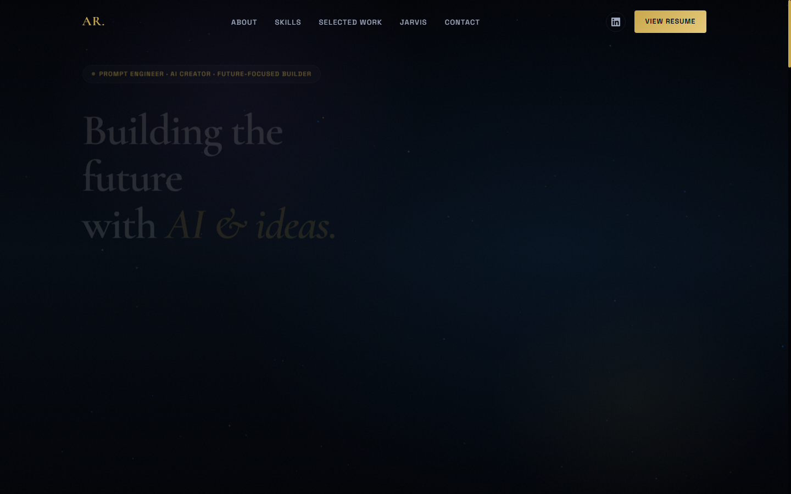
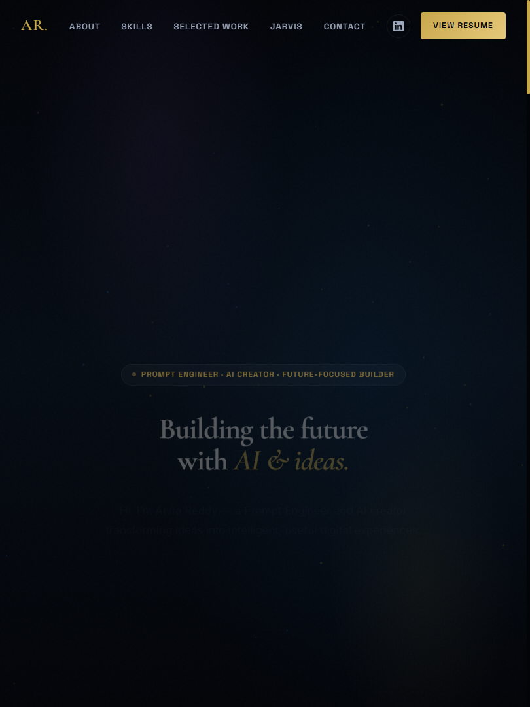
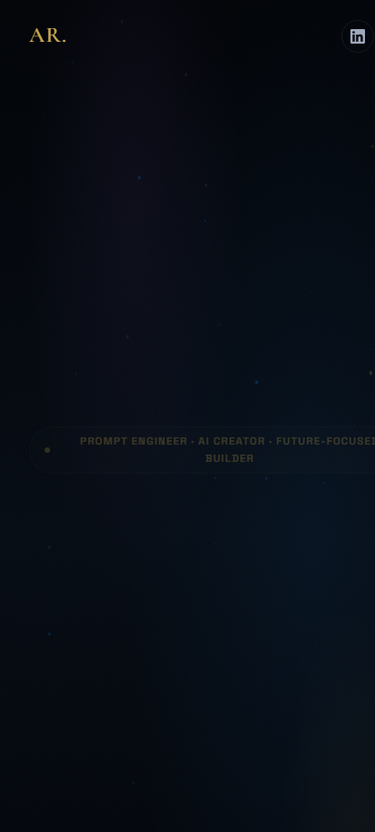

A Professional Digital Identity for Showcasing Skills, Projects & Academic Achievements

A personal portfolio website is a centralized digital platform to represent a developer's professional identity. It showcases skills, projects, education, certifications, and contact information, providing a professional online presence that can be shared with recruiters, clients, and collaborators.
Professional introduction, career vision, and personal branding tailored for recruiters.
Technical skills, web engineering proficiency, frameworks, and AI competencies.
Practical projects, code implementations, and interactive live software demonstrations.
Easy communication channels, messaging form, and direct networking links.
Addressing the critical gaps in traditional resume formats and fragmented information channels.
Five key objectives driving the design and development of the personal portfolio website.
Build a professional personal online presence.
Showcase technical skills and projects.
Present education, certifications, and achievements.
Provide recruiters with quick access to relevant information.
Create a responsive and user-friendly website.
Layered technology architecture showing tools and frameworks connected across system tiers.
Major website sections mapped directly around the central website user interface.
Core design principles paired with realistic multi-device portfolio mockups.


The website was developed iteratively and tested extensively across different screen sizes.
Comparing current project deliverables with future enhancement roadmap.